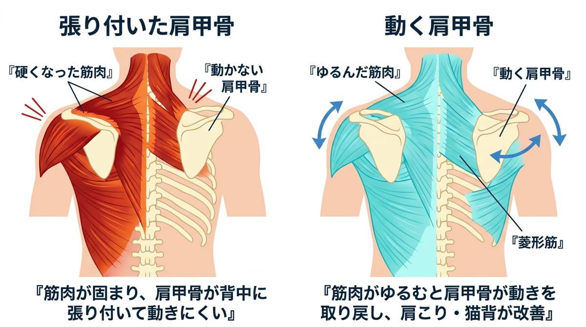
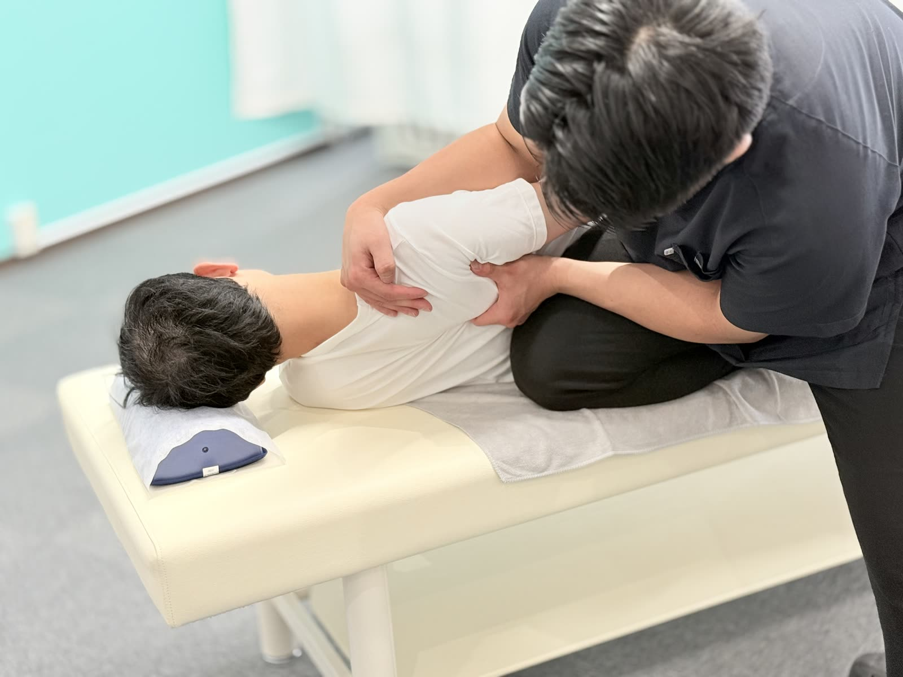

肩甲骨は本来、背中の上を自由に滑る「浮いた骨」。それが周りの筋肉ごとガチガチに張り付いてしまうと、肩こり・猫背・頭痛の温床になります。
肩甲骨まわりには17もの筋肉が集まっています。ここが固まると、肩・首・背中の広い範囲に不調が連鎖していきます。
肩甲骨は肋骨の上に筋肉だけでぶら下がっている、とても自由度の高い骨です。腕を上げる・回す・物を引き寄せる——上半身のあらゆる動きの起点になっています。
ところがデスクワークやスマホ操作では、腕は前に置きっぱなし。肩甲骨は外側に開いた位置で何時間も固定されます。動かさない筋肉は血流が滞って硬くなり、やがて肩甲骨は「開いて上がった位置」で背中に張り付いたようになります。
こうなると、腕を動かすたびに肩関節だけが頑張ることになり、肩こり・四十肩のリスクが跳ね上がるほか、胸が閉じて猫背・浅い呼吸が定着します。


張り付いた肩甲骨まわりの筋肉を一枚ずつ丁寧にゆるめ、肩甲骨本来の「浮いて滑る」動きを取り戻していく施術です。バリバリと無理にはがすような乱暴なことはしません。深層の筋肉まで的確にアプローチできるのは、解剖学を熟知した国家資格者だからこそ。

肩まわりのお悩み・お仕事での腕の使い方を伺います。

肩甲骨がどれだけ動くか、左右差はあるかを検査。腕の上がり方の変化を施術後と比べます。

深層筋までゆるめて肩甲骨の動きを回復。猫背矯正と組み合わせ、動きをキープするセルフストレッチもお伝えします。

名前のインパクトから痛そうに聞こえますが、実際は肩甲骨まわりの筋肉をゆるめながら少しずつ動きを取り戻していく施術です。強い痛みを伴う施術は行いませんのでご安心ください。
肩こり・首こりの軽減、猫背・巻き肩の改善、頭痛の軽減、呼吸が深くなる、腕が上がりやすくなる、といった変化が期待できます。
軽度であれば有効ですが、長年固まった肩甲骨は自力で動かせる範囲に限界があります。まず施術で動く状態を取り戻し、セルフストレッチで維持するのが効率的です。